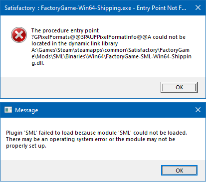
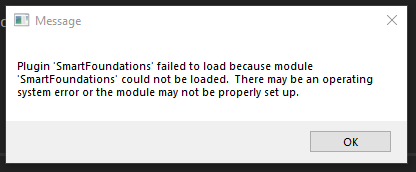

I run Steam experimental build CL#165698. No mods works just fine.
I also downloaded latest SMM 2.5.0 and installed some mod (doesn’t matter which one, fails the same).
Judging from the contents of
steamapps\common\Satisfactory\FactoryGame\Mods\SML\ResourcesSML.uplugin
which reads
"VersionName": "3.1.1",
"SemVersion": "3.1.1",
"FriendlyName": "Satisfactory Mod Loader",
"Description": "Mod loading and compatibility API for Satisfactory",
I guess SMM installed SML 3.1.1 which is latest as of the time of this writing.
Upon starting the game I see two sequential error message boxes as shown below:

Also of note is the fact that my friend runs the same versions on his machine just fine, so it must be something wrong with my system.
What do I do to amend the situation?
SML not being loaded (again)
Same with Epic platform.
I removed all files: game, mod manager, local factoryGame files in local.
The I reinstall the game and SML.
Tried with different mod recently updated and/or strongly used.
And, same error
{kind=link}

Mods have been disabled by the Developers on the Experimental Builds.
Mods only work on Early Access.
There are several posts on SatisfactoryQA and the steam forums that explain this as well.